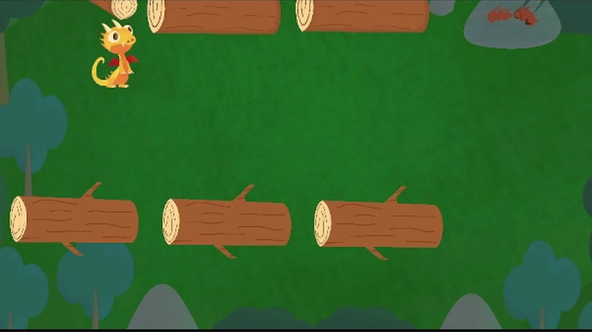
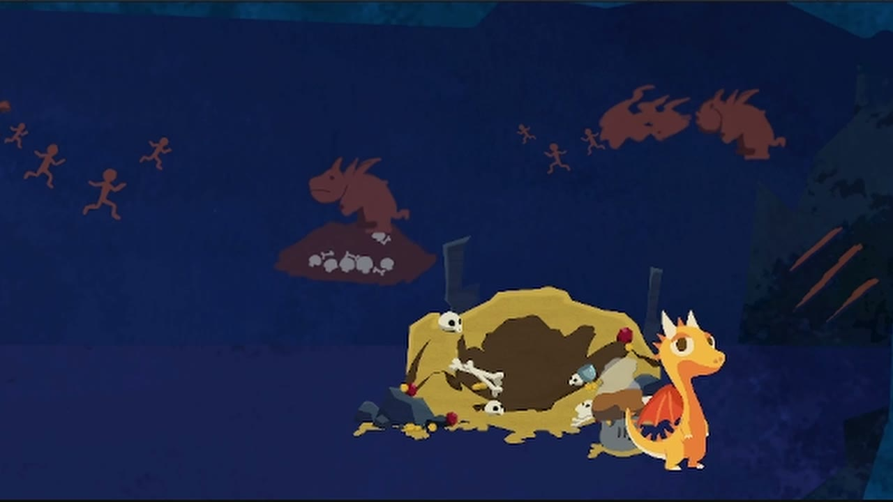
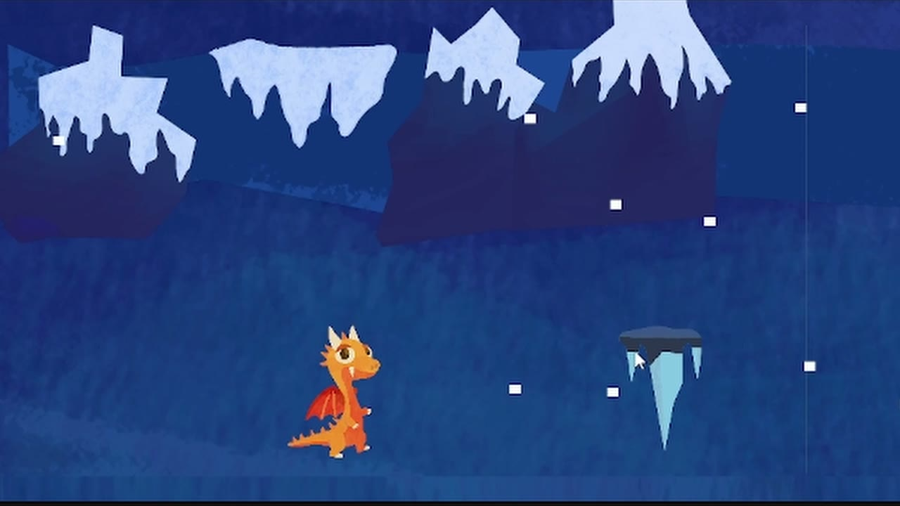
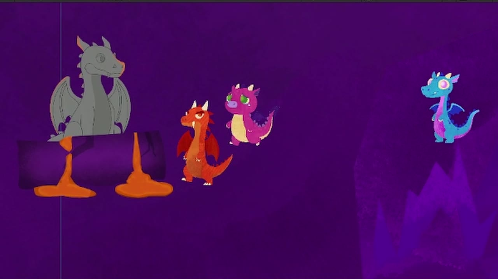
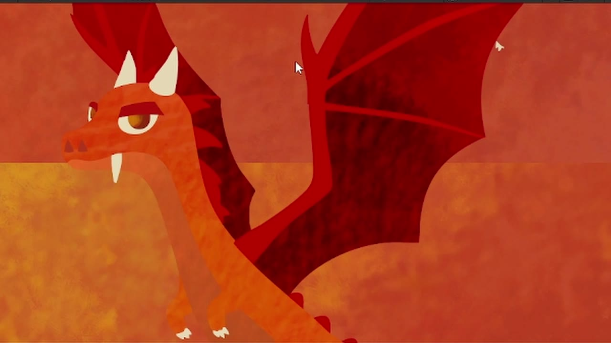
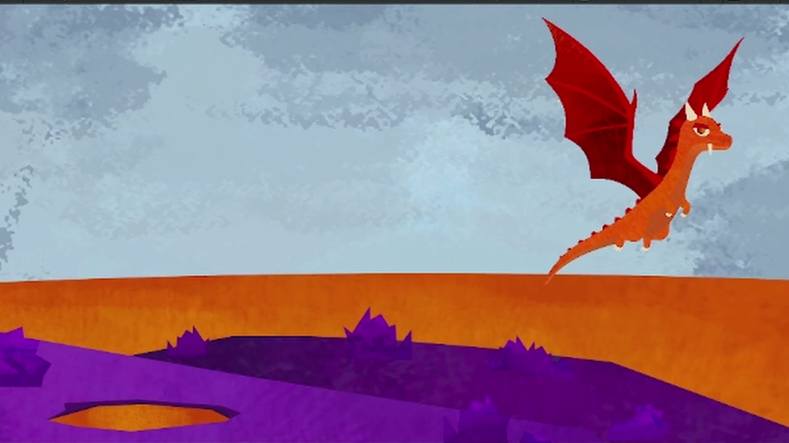
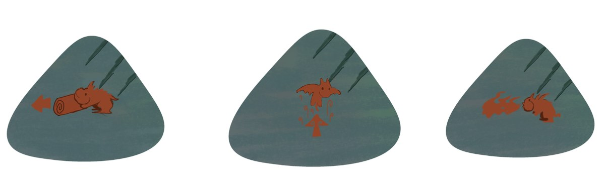
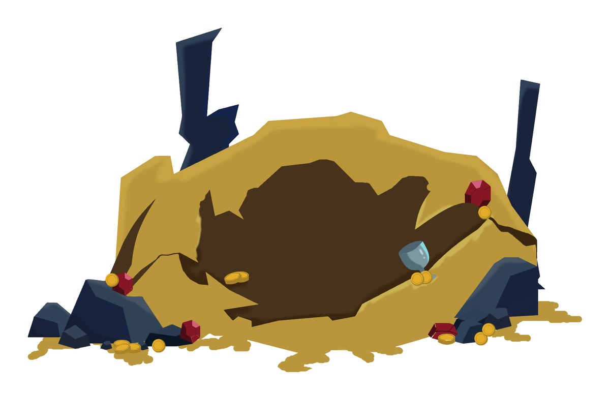
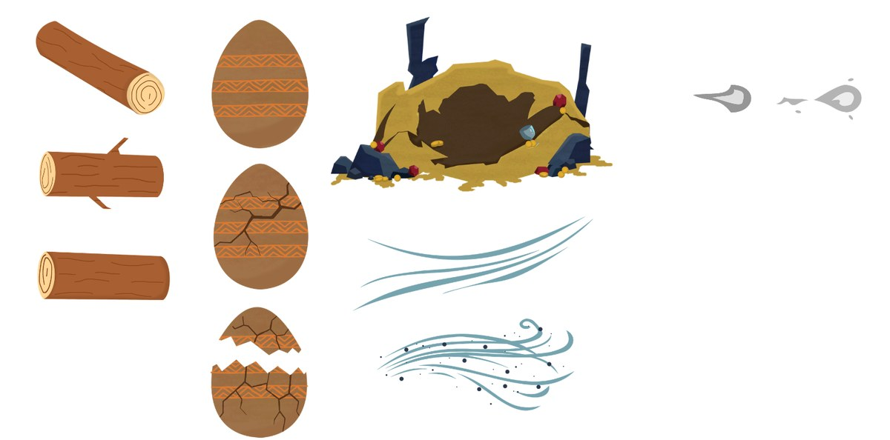
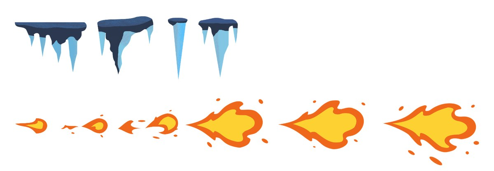

Videojuego · Proyecto grupal
La odisea de Lyro
Lyro es un dragón que tiene que atravesar tres islas para descubrir en qué se va a convertir.
Ficha del proyecto
- Proyecto
- La odisea de Lyro
- Contexto
- Taller de Diseño Multimedial 4 · UNLP · 2025
- Equipo
- 6 integrantes
- Tecnología
- Unity
La historia
En cada isla Lyro crece y sus habilidades (volar, soplar y empujar) evolucionan: en el bosque es una cría torpe, en la montaña un adolescente y en la isla volcánica un adulto.
El final depende de cómo resuelvas los obstáculos: Lyro puede terminar siendo el dragón temido que todos esperan, o el dragón amigable que él quiere ser.
Mi rol: programé el segundo y el tercer nivel junto a un compañero, ilustré objetos del juego en vectores, y busqué y creé los sonidos.
El viaje
- Bosque: Lyro sale del huevo y aprende a empujar troncos para abrirse paso.
- Cuevas: entre isla e isla encuentra nidos donde tiene que dormir para crecer y pasar al siguiente nivel.
- Hielo: ya puede volar y soplar fuego para derretir los obstáculos.
- Volcán: lo que decidas con los otros dragones define si termina temido o amigable.






Lo que ilustré
Objetos y efectos del juego que armé en vectores, a partir de moodboards.



